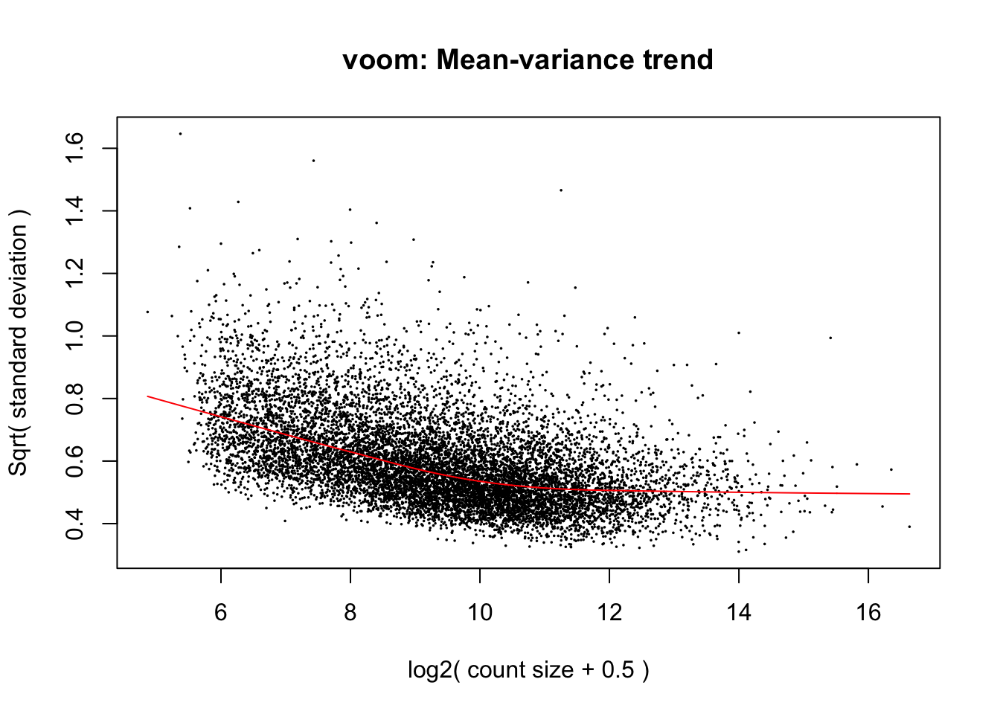
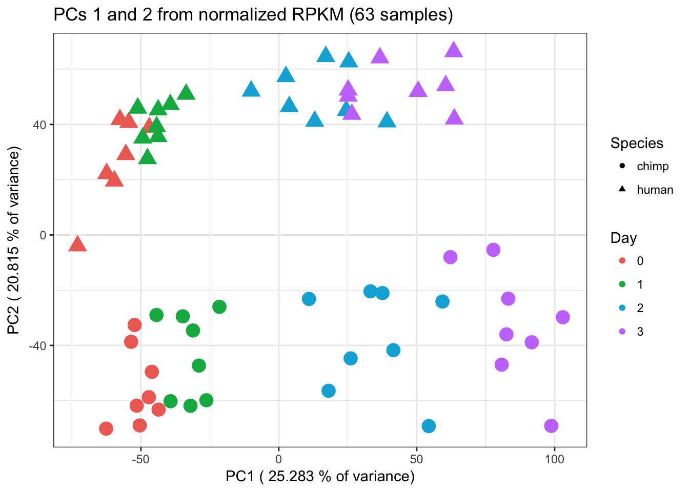
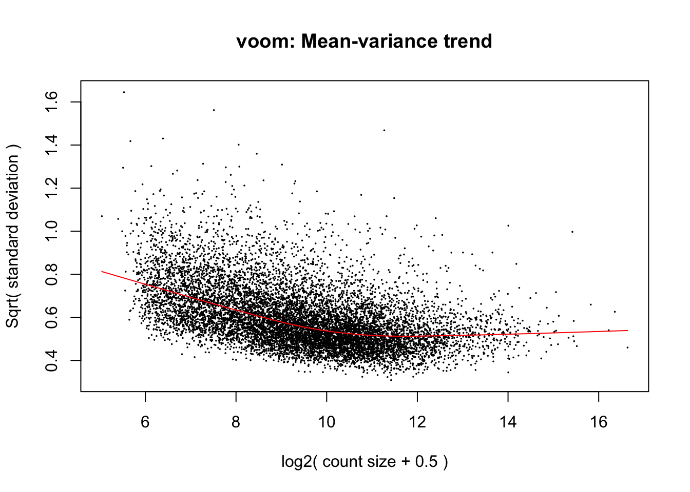

RPKM_analysis
Lauren Blake
April 16, 2017
- Method 1: Find RPKM values by using gene count data and the “rpkm” function.
- Compare the RPKM calculation from method 1 to the cyclic loess normalized values
- Number of DE genes with RPKM method #1
- Method 2: Find RPKM values by adjusting the normalized CPM counts by gene lengths
- Compare the RPKM calculation from method 2 to the cyclic loess normalized values
- Compare the RPKM values calculated by each of the methods
- PCA (method 2)
- Number of DE genes RPKM Method 2
- Compare the TMM-normalized log2(CPM) to the TMM and cyclic loess normalized data
We will perform analysis on normalized RPKM values.
# Load libraries
library("gplots")## Warning: package 'gplots' was built under R version 3.2.4##
## Attaching package: 'gplots'## The following object is masked from 'package:stats':
##
## lowesslibrary("ggplot2")## Warning: package 'ggplot2' was built under R version 3.2.5source("~/Desktop/Endoderm_TC/ashlar-trial/analysis/chunk-options.R")## Warning: package 'knitr' was built under R version 3.2.5library("colorfulVennPlot")## Loading required package: gridlibrary("VennDiagram")## Warning: package 'VennDiagram' was built under R version 3.2.5## Loading required package: futile.logger## Warning: package 'futile.logger' was built under R version 3.2.5library("edgeR")## Warning: package 'edgeR' was built under R version 3.2.4## Loading required package: limma## Warning: package 'limma' was built under R version 3.2.4library("RColorBrewer")
# Load colors
pal <- c(brewer.pal(9, "Set1"), brewer.pal(8, "Set2"), brewer.pal(12, "Set3"))
# Get counts data
counts_genes_in_cutoff <- read.delim("~/Desktop/Endoderm_TC/ashlar-trial/data/gene_counts_cutoff_norm_data.txt", header=TRUE)
# Get cyclic loess normalized data
cpm_cyclicloess <- read.delim("~/Desktop/Endoderm_TC/ashlar-trial/data/cpm_cyclicloess.txt")
# Get individual
After_removal_sample_info <- read.csv("~/Desktop/Endoderm_TC/ashlar-trial/data/After_removal_sample_info.csv")
# Make labels with species and day
individual <- After_removal_sample_info$IndividualMethod 1: Find RPKM values by using gene count data and the “rpkm” function.
# Get orth exon lengths
ortho_exon_lengths <- read.delim("~/Dropbox/Endoderm TC/ortho_exon_lengths.txt")
totalNumReads <- as.data.frame(t(colSums(counts_genes_in_cutoff, na.rm = FALSE, dims = 1) ))
# Calculate per species RPKM
humans <- c(1:7, 16:23, 32:39, 48:55)
chimps <- c(8:15, 24:31, 40:47, 56:63)
# Make RPKM into a row
RPKM_humans <- rpkm(counts_genes_in_cutoff, gene.length=ortho_exon_lengths$hutotal/1000, normalized.lib.sizes=TRUE, log=TRUE)
RPKM_chimps <- rpkm(counts_genes_in_cutoff, gene.length=ortho_exon_lengths$chtotal/1000, normalized.lib.sizes=TRUE, log=TRUE)
# Take human samples from the human RPKM and chimp samples from the chimp RPKM data frames
RPKM_all <- cbind(RPKM_humans[,1:7], RPKM_chimps[,8:15], RPKM_humans[,16:23], RPKM_chimps[,24:31], RPKM_humans[,32:39], RPKM_chimps[,40:47], RPKM_humans[,48:55], RPKM_chimps[,56:63])Compare the RPKM calculation from method 1 to the cyclic loess normalized values
# Calculate the Pearson's correlation for each sample
Cor_values = matrix(data = NA, nrow = 63, ncol = 1, dimnames = list(c("human 0", "human 0", "human 0", "human 0", "human 0", "human 0", "human 0", "chimp 0", "chimp 0", "chimp 0", "chimp 0", "chimp 0", "chimp 0", "chimp 0", "chimp 0", "human 1", "human 1", "human 1", "human 1", "human 1", "human 1", "human 1", "human 1", "chimp 1", "chimp 1", "chimp 1", "chimp 1", "chimp 1", "chimp 1", "chimp 1", "chimp 1", "human 2", "human 2", "human 2", "human 2", "human 2", "human 2", "human 2", "human 2", "chimp 2", "chimp 2", "chimp 2", "chimp 2", "chimp 2", "chimp 2", "chimp 2", "chimp 2", "human 3", "human 3", "human 3", "human 3", "human 3", "human 3", "human 3", "human 3", "chimp 3", "chimp 3", "chimp 3", "chimp 3", "chimp 3", "chimp 3", "chimp 3", "chimp 3"), c("Pearson's correlation")))
for (i in 1:63){
Cor_values[i,1] <- cor(RPKM_all[,i], cpm_cyclicloess[,i])
}
summary(Cor_values) Pearson's correlation
Min. :0.7725
1st Qu.:0.7948
Median :0.8040
Mean :0.8047
3rd Qu.:0.8121
Max. :0.8392 Number of DE genes with RPKM method #1
species <- c("H", "H","H","H","H","H","H", "C", "C","C","C","C","C","C","C","H","H","H","H","H","H","H","H", "C", "C","C","C","C","C","C","C", "H","H","H","H","H","H","H","H", "C", "C","C","C","C","C","C","C", "H","H","H","H","H","H","H","H", "C", "C","C","C","C","C","C","C")
day <- c("0", "0","0","0","0","0","0", "0", "0", "0","0","0","0","0", "0", "1","1","1","1","1","1","1","1", "1","1","1","1","1","1","1","1", "2", "2","2","2","2","2","2","2","2", "2","2","2","2","2","2","2", "3", "3","3","3","3","3","3","3", "3", "3","3","3","3","3","3", "3")
labels <- paste(species, day, sep=" ")
# Take the TMM of the genes that meet the criteria
dge_in_cutoff <- DGEList(counts=as.matrix(counts_genes_in_cutoff), genes=rownames(counts_genes_in_cutoff), group = as.character(t(labels)))
dge_in_cutoff <- calcNormFactors(dge_in_cutoff)
design <- model.matrix(~ species*day )
colnames(design)[1] <- "Intercept"
colnames(design) <- gsub("speciesH", "Human", colnames(design))
colnames(design) <- gsub(":", ".", colnames(design))
# We want a random effect term for individual. As a result, we want to run voom twice. See https://support.bioconductor.org/p/59700/
cpm.voom <- voom(dge_in_cutoff, design, normalize.method="cyclicloess")
corfit <- duplicateCorrelation(cpm.voom, design, block=individual)
corfit.correlation = corfit$consensus.correlation
cpm.voom.corfit <- voom(dge_in_cutoff, design, plot = TRUE, normalize.method="cyclicloess", block=individual, correlation = corfit.correlation )
cpm.voom.corfit$E <- as.data.frame(RPKM_all)
# Run lmFit and eBayes in limma
fit <- lmFit(cpm.voom.corfit , design, block=individual, correlation=corfit.correlation)
# In the contrast matrix, we have the species DE at each day
cm2 <- makeContrasts(HvCday0 = Human, HvCday1 = Human + Human.day1, HvCday2 = Human + Human.day2, HvCday3 = Human + Human.day3, Hday01 = day1 + Human.day1, Hday12 = day2 + Human.day2 - day1 - Human.day1, Hday23 = day3 + Human.day3 - day2 - Human.day2, Cday01 = day1, Cday12 = day2 - day1, Cday23 = day3 - day2, Sig_inter_day1 = Human.day1, Sig_inter_day2 = Human.day2 - Human.day1, Sig_inter_day3 = Human.day3 - Human.day2, levels = design)
# Fit the new model
diff_species <- contrasts.fit(fit, cm2)
fit2 <- eBayes(diff_species)
top3 <- list(HvCday0 =topTable(fit2, coef=1, adjust="BH", number=Inf, sort.by="none"), HvCday1 =topTable(fit2, coef=2, adjust="BH", number=Inf, sort.by="none"), HvCday2 =topTable(fit2, coef=3, adjust="BH", number=Inf, sort.by="none"), HvCday3 =topTable(fit2, coef=4, adjust="BH", number=Inf, sort.by="none"), Hday01 =topTable(fit2, coef=5, adjust="BH", number=Inf, sort.by="none"), Hday12 =topTable(fit2, coef=6, adjust="BH", number=Inf, sort.by="none"), Hday23 =topTable(fit2, coef=7, adjust="BH", number=Inf, sort.by="none"), Cday01 =topTable(fit2, coef=8, adjust="BH", number=Inf, sort.by="none"), Cday12 =topTable(fit2, coef=9, adjust="BH", number=Inf, sort.by="none"), Cday23 =topTable(fit2, coef=10, adjust="BH", number=Inf, sort.by="none"))
important_columns <- c(1,2,6)
# Find the genes that are DE at Day 0
HvCday0 =topTable(fit2, coef=1, adjust="BH", number=Inf, sort.by="none")
nrow(HvCday0[which(HvCday0$adj.P.Val < 0.05), important_columns])[1] 4471HvCday0 <- HvCday0[which(HvCday0$adj.P.Val < 0.05), 1]
# Find the genes that are DE at Day 1
HvCday1 =topTable(fit2, coef=2, adjust="BH", number=Inf, sort.by="none")
nrow(HvCday1[which(HvCday1$adj.P.Val < 0.05), important_columns])[1] 4389HvCday1 <- HvCday1[which(HvCday1$adj.P.Val < 0.05), 1]
# Find the genes that are DE at Day 2
HvCday2 =topTable(fit2, coef=3, adjust="BH", number=Inf, sort.by="none")
nrow(HvCday2[which(HvCday2$adj.P.Val < 0.05), important_columns])[1] 4657HvCday2 <- HvCday2[which(HvCday2$adj.P.Val < 0.05), 1]
# Find the genes that are DE at Day 3
HvCday3 =topTable(fit2, coef=4, adjust="BH", number=Inf, sort.by="none")
nrow(HvCday3[which(HvCday3$adj.P.Val < 0.05), important_columns])[1] 5005HvCday3 <- HvCday3[which(HvCday3$adj.P.Val < 0.05), 1]
# 4471
# 4389
# 4657
# 5005
important_columns <- c(1,2,6)
# Find the genes that are DE at Human Day 0 to Day 1
H_day01 =topTable(fit2, coef=5, adjust="BH", number=Inf, sort.by="none")
dim(H_day01[which(H_day01$adj.P.Val < 0.05),])[1] 3243 7H_day01 <- H_day01[, important_columns]
# Find the genes that are DE at Human Day 1 to Day 2
H_day12 =topTable(fit2, coef=6, adjust="BH", number=Inf, sort.by="none")
H_day12 <- H_day12[, important_columns]
# Find the genes that are DE at Human Day 2 to Day 3
H_day23 =topTable(fit2, coef=7, adjust="BH", number=Inf, sort.by="none")
H_day23 <- H_day23[, important_columns]
# Find the genes that are DE at Chimp Day 0 to Day 1
C_day01 =topTable(fit2, coef=8, adjust="BH", number=Inf, sort.by="none")
C_day01 <- C_day01[, important_columns]
# Find the genes that are DE at Chimp Day 1 to Day 2
C_day12 =topTable(fit2, coef=9, adjust="BH", number=Inf, sort.by="none")
C_day12 <- C_day12[, important_columns]
# Find the genes that are DE at Chimp Day 2 to Day 3
C_day23 =topTable(fit2, coef=10, adjust="BH", number=Inf, sort.by="none")
C_day23 <- C_day23[, important_columns]
# Check dimensions
dim(H_day01)[1] 10304 3dim(H_day12)[1] 10304 3dim(H_day23)[1] 10304 3dim(C_day01)[1] 10304 3dim(C_day12)[1] 10304 3dim(C_day23)[1] 10304 3mylist <- list()
mylist[["DE Day 0"]] <- HvCday0
mylist[["DE Day 3"]] <- HvCday3
mylist[["DE Day 1"]] <- HvCday1
mylist[["DE Day 2"]] <- HvCday2
# Make as pdf
Four_comp <- venn.diagram(mylist, filename= NULL, main="DE genes between species per day (5% FDR, RPKM, 63 samples)", cex=1.5 , fill = pal[1:4], lty=1, height=2000, width=3000)
pdf(file = "~/Dropbox/Endoderm TC/Tables_Supplement/Supplementary_Figures/SF4w_Four_comparisons_RPKM_norm_lib.pdf")
grid.draw(Four_comp)
dev.off()quartz_off_screen
2 Method 2: Find RPKM values by adjusting the normalized CPM counts by gene lengths
species <- c("H", "H","H","H","H","H","H", "C", "C","C","C","C","C","C","C","H","H","H","H","H","H","H","H", "C", "C","C","C","C","C","C","C", "H","H","H","H","H","H","H","H", "C", "C","C","C","C","C","C","C", "H","H","H","H","H","H","H","H", "C", "C","C","C","C","C","C","C")
day <- c("0", "0","0","0","0","0","0", "0", "0", "0","0","0","0","0", "0", "1","1","1","1","1","1","1","1", "1","1","1","1","1","1","1","1", "2", "2","2","2","2","2","2","2","2", "2","2","2","2","2","2","2", "3", "3","3","3","3","3","3","3", "3", "3","3","3","3","3","3", "3")
labels <- paste(species, day, sep=" ")
# Take the TMM of the genes that meet the criteria
dge_in_cutoff <- DGEList(counts=as.matrix(counts_genes_in_cutoff), genes=rownames(counts_genes_in_cutoff), group = as.character(t(labels)))
dge_in_cutoff <- calcNormFactors(dge_in_cutoff)
design <- model.matrix(~ species*day )
colnames(design)[1] <- "Intercept"
colnames(design) <- gsub("speciesH", "Human", colnames(design))
colnames(design) <- gsub(":", ".", colnames(design))
# We want a random effect term for individual. As a result, we want to run voom twice. See https://support.bioconductor.org/p/59700/
cpm.voom <- voom(dge_in_cutoff, design, normalize.method="cyclicloess")
corfit <- duplicateCorrelation(cpm.voom, design, block=individual)
corfit.correlation = corfit$consensus.correlation
cpm.voom.corfit <- voom(dge_in_cutoff, design, plot = TRUE, normalize.method="cyclicloess", block=individual, correlation = corfit.correlation )# Make a matrix with the gene lengths
human_gene_lengths <- ortho_exon_lengths[,3]/1000
chimp_gene_lengths <- ortho_exon_lengths[,5]/1000
gene_length_all <- cbind(human_gene_lengths, human_gene_lengths, human_gene_lengths, human_gene_lengths, human_gene_lengths, human_gene_lengths, human_gene_lengths, chimp_gene_lengths, chimp_gene_lengths, chimp_gene_lengths, chimp_gene_lengths, chimp_gene_lengths, chimp_gene_lengths, chimp_gene_lengths, chimp_gene_lengths, human_gene_lengths, human_gene_lengths, human_gene_lengths, human_gene_lengths, human_gene_lengths, human_gene_lengths, human_gene_lengths, human_gene_lengths, chimp_gene_lengths, chimp_gene_lengths, chimp_gene_lengths, chimp_gene_lengths, chimp_gene_lengths, chimp_gene_lengths, chimp_gene_lengths, chimp_gene_lengths, human_gene_lengths, human_gene_lengths, human_gene_lengths, human_gene_lengths, human_gene_lengths, human_gene_lengths, human_gene_lengths, human_gene_lengths, chimp_gene_lengths, chimp_gene_lengths, chimp_gene_lengths, chimp_gene_lengths, chimp_gene_lengths, chimp_gene_lengths, chimp_gene_lengths, chimp_gene_lengths, human_gene_lengths, human_gene_lengths, human_gene_lengths, human_gene_lengths, human_gene_lengths, human_gene_lengths, human_gene_lengths, human_gene_lengths, chimp_gene_lengths, chimp_gene_lengths, chimp_gene_lengths, chimp_gene_lengths, chimp_gene_lengths, chimp_gene_lengths, chimp_gene_lengths, chimp_gene_lengths)
# Adjust the
cpm.voom.corfit$E <- cpm.voom.corfit$E - log2(gene_length_all)Compare the RPKM calculation from method 2 to the cyclic loess normalized values
# Calculate the Pearson's correlation for each sample
Cor_values = matrix(data = NA, nrow = 63, ncol = 1, dimnames = list(c("human 0", "human 0", "human 0", "human 0", "human 0", "human 0", "human 0", "chimp 0", "chimp 0", "chimp 0", "chimp 0", "chimp 0", "chimp 0", "chimp 0", "chimp 0", "human 1", "human 1", "human 1", "human 1", "human 1", "human 1", "human 1", "human 1", "chimp 1", "chimp 1", "chimp 1", "chimp 1", "chimp 1", "chimp 1", "chimp 1", "chimp 1", "human 2", "human 2", "human 2", "human 2", "human 2", "human 2", "human 2", "human 2", "chimp 2", "chimp 2", "chimp 2", "chimp 2", "chimp 2", "chimp 2", "chimp 2", "chimp 2", "human 3", "human 3", "human 3", "human 3", "human 3", "human 3", "human 3", "human 3", "chimp 3", "chimp 3", "chimp 3", "chimp 3", "chimp 3", "chimp 3", "chimp 3", "chimp 3"), c("Pearson's correlation")))
for (i in 1:63){
Cor_values[i,1] <- cor(cpm.voom.corfit$E[,i], cpm_cyclicloess[,i])
}
summary(Cor_values) Pearson's correlation
Min. :0.7924
1st Qu.:0.8025
Median :0.8101
Mean :0.8097
3rd Qu.:0.8162
Max. :0.8389 Compare the RPKM values calculated by each of the methods
Cor_values = matrix(data = NA, nrow = 63, ncol = 1, dimnames = list(c("human 0", "human 0", "human 0", "human 0", "human 0", "human 0", "human 0", "chimp 0", "chimp 0", "chimp 0", "chimp 0", "chimp 0", "chimp 0", "chimp 0", "chimp 0", "human 1", "human 1", "human 1", "human 1", "human 1", "human 1", "human 1", "human 1", "chimp 1", "chimp 1", "chimp 1", "chimp 1", "chimp 1", "chimp 1", "chimp 1", "chimp 1", "human 2", "human 2", "human 2", "human 2", "human 2", "human 2", "human 2", "human 2", "chimp 2", "chimp 2", "chimp 2", "chimp 2", "chimp 2", "chimp 2", "chimp 2", "chimp 2", "human 3", "human 3", "human 3", "human 3", "human 3", "human 3", "human 3", "human 3", "chimp 3", "chimp 3", "chimp 3", "chimp 3", "chimp 3", "chimp 3", "chimp 3", "chimp 3"), c("Pearson's correlation")))
for (i in 1:63){
Cor_values[i,1] <- cor(cpm.voom.corfit$E[,i], RPKM_all[,i])
}
summary(Cor_values) Pearson's correlation
Min. :0.9979
1st Qu.:0.9996
Median :0.9998
Mean :0.9996
3rd Qu.:0.9999
Max. :1.0000 PCA (method 2)
After_removal_sample_info <- read.csv("~/Desktop/Endoderm_TC/ashlar-trial/data/After_removal_sample_info.csv")
Species <- After_removal_sample_info$Species
species <- After_removal_sample_info$Species
pca_genes <- prcomp(t(cpm.voom.corfit$E), scale = T, retx = TRUE, center = TRUE)
matrixpca <- pca_genes$x
pc1 <- matrixpca[,1]
pc2 <- matrixpca[,2]
pc3 <- matrixpca[,3]
pc4 <- matrixpca[,4]
pc5 <- matrixpca[,5]
pcs <- data.frame(pc1, pc2, pc3, pc4, pc5)
summary <- summary(pca_genes)
#dev.off()
ggplot(data=pcs, aes(x=pc1, y=pc2, color=day, shape=Species, size=2)) + geom_point(aes(colour = as.factor(day))) + scale_colour_manual(name="Day",
values = c("0"=rgb(239/255, 110/255, 99/255, 1), "1"= rgb(0/255, 180/255, 81/255, 1), "2"=rgb(0/255, 177/255, 219/255, 1),
"3"=rgb(199/255, 124/255, 255/255,1))) + xlab(paste("PC1 (",(summary$importance[2,1]*100),"% of variance)")) + ylab(paste("PC2 (",(summary$importance[2,2]*100),"% of variance)")) + scale_size(guide = 'none') + theme_bw() + ggtitle("PCs 1 and 2 from normalized RPKM (63 samples)")
Number of DE genes RPKM Method 2
# Run lmFit and eBayes in limma
fit <- lmFit(cpm.voom.corfit , design, block=individual, correlation=corfit.correlation)
# In the contrast matrix, we have the species DE at each day
cm2 <- makeContrasts(HvCday0 = Human, HvCday1 = Human + Human.day1, HvCday2 = Human + Human.day2, HvCday3 = Human + Human.day3, Hday01 = day1 + Human.day1, Hday12 = day2 + Human.day2 - day1 - Human.day1, Hday23 = day3 + Human.day3 - day2 - Human.day2, Cday01 = day1, Cday12 = day2 - day1, Cday23 = day3 - day2, Sig_inter_day1 = Human.day1, Sig_inter_day2 = Human.day2 - Human.day1, Sig_inter_day3 = Human.day3 - Human.day2, levels = design)
# Fit the new model
diff_species <- contrasts.fit(fit, cm2)
fit2 <- eBayes(diff_species)
top3 <- list(HvCday0 =topTable(fit2, coef=1, adjust="BH", number=Inf, sort.by="none"), HvCday1 =topTable(fit2, coef=2, adjust="BH", number=Inf, sort.by="none"), HvCday2 =topTable(fit2, coef=3, adjust="BH", number=Inf, sort.by="none"), HvCday3 =topTable(fit2, coef=4, adjust="BH", number=Inf, sort.by="none"), Hday01 =topTable(fit2, coef=5, adjust="BH", number=Inf, sort.by="none"), Hday12 =topTable(fit2, coef=6, adjust="BH", number=Inf, sort.by="none"), Hday23 =topTable(fit2, coef=7, adjust="BH", number=Inf, sort.by="none"), Cday01 =topTable(fit2, coef=8, adjust="BH", number=Inf, sort.by="none"), Cday12 =topTable(fit2, coef=9, adjust="BH", number=Inf, sort.by="none"), Cday23 =topTable(fit2, coef=10, adjust="BH", number=Inf, sort.by="none"))
important_columns <- c(1,2,6)
# Find the genes that are DE at Day 0
HvCday0 =topTable(fit2, coef=1, adjust="BH", number=Inf, sort.by="none")
nrow(HvCday0[which(HvCday0$adj.P.Val < 0.05), important_columns])[1] 4482HvCday0 <- HvCday0[which(HvCday0$adj.P.Val < 0.05), 1]
# Find the genes that are DE at Day 1
HvCday1 =topTable(fit2, coef=2, adjust="BH", number=Inf, sort.by="none")
nrow(HvCday1[which(HvCday1$adj.P.Val < 0.05), important_columns])[1] 4415HvCday1 <- HvCday1[which(HvCday1$adj.P.Val < 0.05), 1]
# Find the genes that are DE at Day 2
HvCday2 =topTable(fit2, coef=3, adjust="BH", number=Inf, sort.by="none")
nrow(HvCday2[which(HvCday2$adj.P.Val < 0.05), important_columns])[1] 4709HvCday2 <- HvCday2[which(HvCday2$adj.P.Val < 0.05), 1]
# Find the genes that are DE at Day 3
HvCday3 =topTable(fit2, coef=4, adjust="BH", number=Inf, sort.by="none")
nrow(HvCday3[which(HvCday3$adj.P.Val < 0.05), important_columns])[1] 5070HvCday3 <- HvCday3[which(HvCday3$adj.P.Val < 0.05), 1]
# 4482
# 4415
# 4709
# 5070
important_columns <- c(1,2,6)
# Find the genes that are DE at Human Day 0 to Day 1
H_day01 =topTable(fit2, coef=5, adjust="BH", number=Inf, sort.by="none")
dim(H_day01[which(H_day01$adj.P.Val < 0.05),])[1] 3231 7H_day01 <- H_day01[, important_columns]
# Find the genes that are DE at Human Day 1 to Day 2
H_day12 =topTable(fit2, coef=6, adjust="BH", number=Inf, sort.by="none")
H_day12 <- H_day12[, important_columns]
# Find the genes that are DE at Human Day 2 to Day 3
H_day23 =topTable(fit2, coef=7, adjust="BH", number=Inf, sort.by="none")
H_day23 <- H_day23[, important_columns]
# Find the genes that are DE at Chimp Day 0 to Day 1
C_day01 =topTable(fit2, coef=8, adjust="BH", number=Inf, sort.by="none")
C_day01 <- C_day01[, important_columns]
# Find the genes that are DE at Chimp Day 1 to Day 2
C_day12 =topTable(fit2, coef=9, adjust="BH", number=Inf, sort.by="none")
C_day12 <- C_day12[, important_columns]
# Find the genes that are DE at Chimp Day 2 to Day 3
C_day23 =topTable(fit2, coef=10, adjust="BH", number=Inf, sort.by="none")
C_day23 <- C_day23[, important_columns]
# Check dimensions
dim(H_day01)[1] 10304 3dim(H_day12)[1] 10304 3dim(H_day23)[1] 10304 3dim(C_day01)[1] 10304 3dim(C_day12)[1] 10304 3dim(C_day23)[1] 10304 3mylist <- list()
mylist[["DE Day 0"]] <- HvCday0
mylist[["DE Day 1"]] <- HvCday1
mylist[["DE Day 2"]] <- HvCday2
mylist[["DE Day 3"]] <- HvCday3
# Make as pdf
Four_comp <- venn.diagram(mylist, filename= NULL, main="DE genes between species per day (5% FDR, RPKM, 63 samples)", cex=1.5 , fill = pal[1:4], lty=1, height=2000, width=3000)
pdf(file = "~/Dropbox/Endoderm TC/Tables_Supplement/Supplementary_Figures/SF4ww_Four_comparisons_RPKM_adj_CPM.pdf")
grid.draw(Four_comp)
dev.off()quartz_off_screen
2 Compare the TMM-normalized log2(CPM) to the TMM and cyclic loess normalized data
# TMM+cyclic loess
species <- c("H", "H","H","H","H","H","H", "C", "C","C","C","C","C","C","C","H","H","H","H","H","H","H","H", "C", "C","C","C","C","C","C","C", "H","H","H","H","H","H","H","H", "C", "C","C","C","C","C","C","C", "H","H","H","H","H","H","H","H", "C", "C","C","C","C","C","C","C")
day <- c("0", "0","0","0","0","0","0", "0", "0", "0","0","0","0","0", "0", "1","1","1","1","1","1","1","1", "1","1","1","1","1","1","1","1", "2", "2","2","2","2","2","2","2","2", "2","2","2","2","2","2","2", "3", "3","3","3","3","3","3","3", "3", "3","3","3","3","3","3", "3")
labels <- paste(species, day, sep=" ")
# Take the TMM of the genes that meet the criteria
dge_in_cutoff <- DGEList(counts=as.matrix(counts_genes_in_cutoff), genes=rownames(counts_genes_in_cutoff), group = as.character(t(labels)))
dge_in_cutoff <- calcNormFactors(dge_in_cutoff)
design <- model.matrix(~ species*day )
colnames(design)[1] <- "Intercept"
colnames(design) <- gsub("speciesH", "Human", colnames(design))
colnames(design) <- gsub(":", ".", colnames(design))
# We want a random effect term for individual. As a result, we want to run voom twice. See https://support.bioconductor.org/p/59700/
cpm.voom <- voom(dge_in_cutoff, design, normalize.method="cyclicloess")
corfit <- duplicateCorrelation(cpm.voom, design, block=individual)
corfit.correlation = corfit$consensus.correlation
cpm.voom.corfit <- voom(dge_in_cutoff, design, plot = TRUE, normalize.method="cyclicloess", block=individual, correlation = corfit.correlation )
cpm_cyclic_loess <- cpm.voom.corfit$E
# TMM only
# We want a random effect term for individual. As a result, we want to run voom twice. See https://support.bioconductor.org/p/59700/
cpm.voom <- voom(dge_in_cutoff, design, normalize.method="none")
corfit <- duplicateCorrelation(cpm.voom, design, block=individual)
corfit.correlation = corfit$consensus.correlation
cpm.voom.corfit <- voom(dge_in_cutoff, design, plot = TRUE, normalize.method="none", block=individual, correlation = corfit.correlation )
cpm_tmm<- cpm.voom.corfit$E
# Find the correlation
Cor_values = matrix(data = NA, nrow = 63, ncol = 1, dimnames = list(c("human 0", "human 0", "human 0", "human 0", "human 0", "human 0", "human 0", "chimp 0", "chimp 0", "chimp 0", "chimp 0", "chimp 0", "chimp 0", "chimp 0", "chimp 0", "human 1", "human 1", "human 1", "human 1", "human 1", "human 1", "human 1", "human 1", "chimp 1", "chimp 1", "chimp 1", "chimp 1", "chimp 1", "chimp 1", "chimp 1", "chimp 1", "human 2", "human 2", "human 2", "human 2", "human 2", "human 2", "human 2", "human 2", "chimp 2", "chimp 2", "chimp 2", "chimp 2", "chimp 2", "chimp 2", "chimp 2", "chimp 2", "human 3", "human 3", "human 3", "human 3", "human 3", "human 3", "human 3", "human 3", "chimp 3", "chimp 3", "chimp 3", "chimp 3", "chimp 3", "chimp 3", "chimp 3", "chimp 3"), c("Pearson's correlation")))
for (i in 1:63){
Cor_values[i,1] <- cor(cpm_tmm[,i], cpm_cyclic_loess[,i])
}
summary(Cor_values) Pearson's correlation
Min. :0.9992
1st Qu.:0.9998
Median :0.9999
Mean :0.9998
3rd Qu.:0.9999
Max. :1.0000